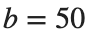
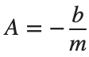
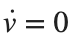
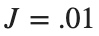
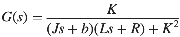
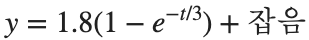
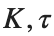

System Modeling
실행 조건
MATLAB · Control System Toolbox
측정 데이터 step_measurements.csv를 스크립트와 같은 폴더에 둡니다. 파일이 없으면 코드가 내려받습니다.
양수인 Gain과 Time Constant를 구하기 위해 두 매개변수의 로그를 fminsearch로 추정합니다.
학습 목표
질량이나 저항을 바꿀 때 Transient Response와 Steady-State Value 중 무엇이 변하는지 모델로 판단합니다.
Cruise 모델과 단위
시작 조건
kg,

N·s/m, 힘 500 N. State와 Output은 Velocity [m/s]입니다.진행 방법

, , , 으로 모델을 만들고 500 N의 일정한 힘에 대한 s 응답을 그리세요.- 만 바꾸고 같은 힘을 입력하세요. 에

을 대입해 Steady-State Velocity를 구하고, 의 계수를 1차 표준형과 대응시켜 Time Constant를 구하세요.
의 계수를 1차 표준형과 대응시켜 Time Constant를 구하세요. - 질량별로 계산한 Steady-State Velocity와 시뮬레이션 마지막 표본 를 나란히 기록하세요. 곡선이 계산한 Steady-State Velocity의 약 63.2%에 도달하는 시각을 찾아, 계산한 Time Constant와 대조하세요.
남길 결과
- 질량 3조건 표, Velocity 곡선 1개, 질량이 바꾼 특성 짧은 설명.
m=1000; b=50; force=500;
G=ss(-b/m,1/m,1,0); t=linspace(0,150,1501)';
[v,tm]=step(force*G,t); figure; plot(tm,v);
xlabel('Time [s]'); ylabel('Linear Velocity [m/s]'); grid on
% TODO: 세 질량 조건의 수치 결과와 식으로 예상한 값을 비교하세요.
결과 기록·자가 점검
m [kg] | |
예상 최종 속도 [m/s] | |
측정 속도 [m/s] | |
Time Constant [s] |
확인할 점
- 입력 힘 500을 중복 곱하지 않았는가?
- 같은 b에서 질량 변화가 Steady-State Velocity보다 Time Constant에 영향을 주는가?
Motor 모델의 계수 비교
시작 조건

,진행 방법

를 만들고 s 응답을 구하세요.
s 응답을 구하세요.- 각 R에서 Pole·DC Gain·최종 출력값을 표에 적으세요.
- 전기 저항과 관성 계수가 식의 어느 항을 바꾸는지 설명하세요.
남길 결과
- 응답 3곡선과 계수 표 1개.
s=tf('s'); J=.01; b=.1; K=.01; L=.5;
for R=[.5 1 2]
G=K/((J*s+b)*(L*s+R)+K^2); disp(R); disp(pole(G)); disp(dcgain(G));
end
% TODO: 같은 시간축의 세 응답을 추가하세요.
결과 기록·자가 점검
R [Ω] | |
Pole | |
DC Gain | |
최종 속도 [rad/s] |
확인할 점
- 모든 조건에서 같은 J·b·K·L·입력을 사용했는가?
- 장기 출력과 1 V×DC Gain을 비교했는가?
측정한 응답에서 모델 추정하기
시작 조건
센서의 합성 Step 기록

입니다. s, 151점, 잡음 표준편차 .03, seed=7입니다.진행 방법
- 제공된 step_measurements.csv를 읽고, 시작 코드의 fminsearch로
 를 추정하세요. 추정 변수의 로그를 최적화하는 코드를 유지합니다.
를 추정하세요. 추정 변수의 로그를 최적화하는 코드를 유지합니다. - 전체 0–15 s와 앞 0–3 s의 표본에 각각 같은 추정을 적용하세요. 구간별 사용 표본 수·추정한

를 표로 적으세요. - 각 추정 곡선을 측정값과 같은 시간축에 그리고, 잔차는 측정값−추정값으로 그리세요. 곡선의 최종값과 잔차 형태를 근거로 더 측정하고 싶은 시간 구간 하나를 정하고 이유를 적으세요.
남길 결과
- 두 측정 구간의 추정값 표와 응답·잔차 그림.
dataFile=fullfile(fileparts(mfilename('fullpath')),'step_measurements.csv');
if ~isfile(dataFile)
websave(dataFile,'https://chorok-daddy.github.io/niil/courses/control-2/system-modeling/step_measurements.csv');
end
data=readmatrix(dataFile); tm=data(:,1); measured=data(:,2);
response=@(time,par) par(1)*(1-exp(-time/par(2)));
for finish=[3 15]
select=tm<=finish;
loss=@(logpar) sum((response(tm(select),exp(logpar))-measured(select)).^2);
logpar=fminsearch(loss,log([1 2]),optimset('Display','off','TolX',1e-10,'TolFun',1e-12));
parameters=exp(logpar); disp(finish); disp(parameters);
end
% TODO: 응답·잔차 그래프를 그려 두 측정 구간의 결과를 비교하세요.
결과 기록·자가 점검
기록 구간 [s] | |
추정 Gain | |
추정 Time Constant [s] | |
RMSE |
확인할 점
- 실제 측정처럼 합성 자료의 설정값을 모른다고 가정하고 추정했는가?
- 기록이 짧을 때의 불확실성을 잔차 크기만으로 판단하지 않았는가?